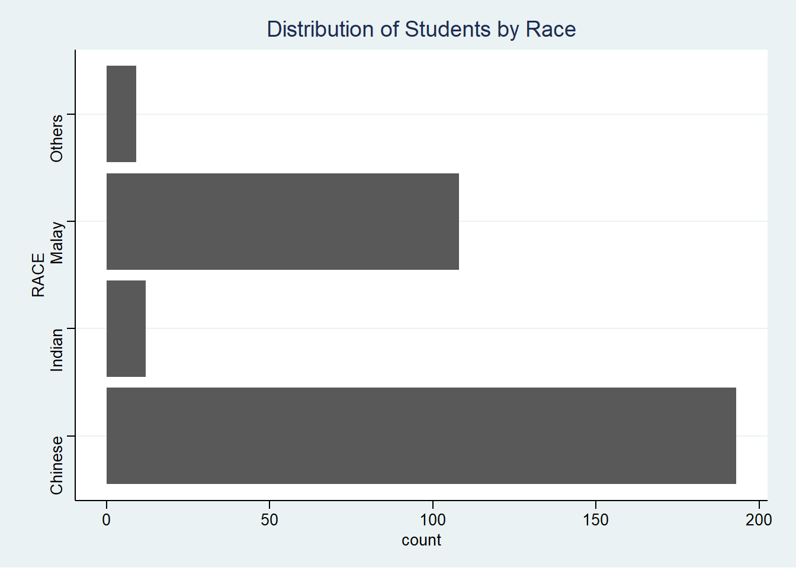
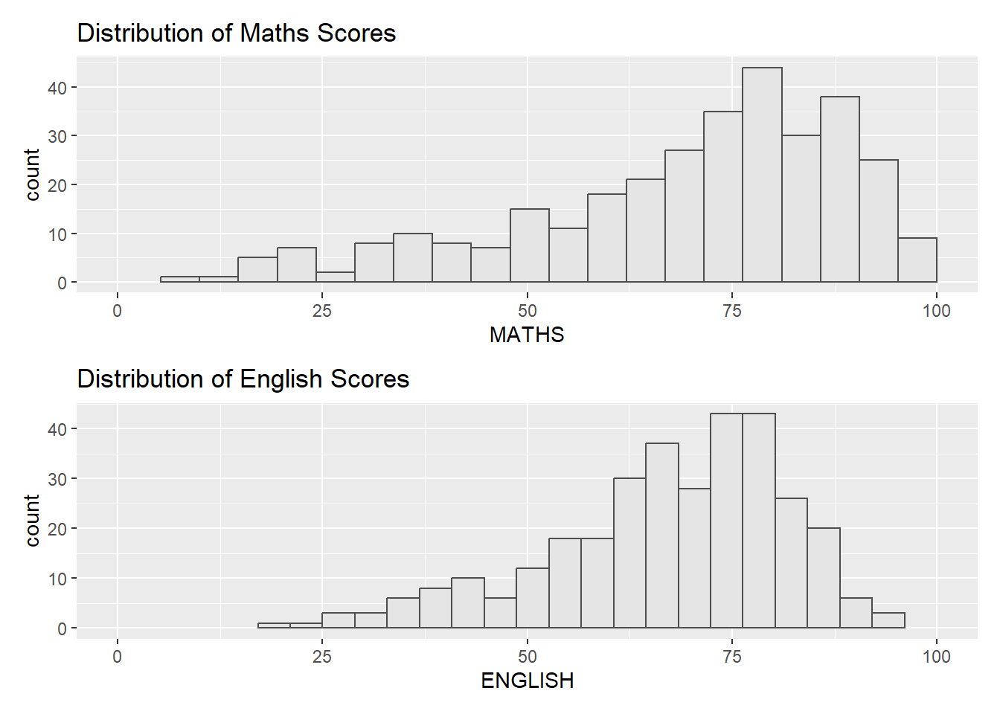

pacman::p_load(tidyverse, ggrepel, ggthemes,
hrbrthemes, patchwork)Hands-on Exercise 02: Customising ggplot2 Plots
1. Overview
In this second lesson, we learn about ggplot2 extensions that helps us to create elegant and effective statistical graphs.
2. Getting Started
2.1. Installing and Loading Packages
We will use the following R packages in addition to tidyverse for this exercise:
ggrepel: provides geoms forggplot2to repel overlapping text labelsggthemes: provides extra themes, geoms, and scales forggplot2hrbrthemes: provides typography-centric themes and theme components forggplot2patchwork: to make plot composition usingggplot2simple and powerful
The packages to be used can be installed and loaded into the R environment using the p_load() function from the pacman package:
2.2. Import Data
Next, we will read the data provided by the Course Instructor into the R environment. We will use the read_csv() function from the readr package found in tidyverse.
exam_data <- read_csv("data/Exam_data.csv")
glimpse(exam_data)Rows: 322
Columns: 7
$ ID <chr> "Student321", "Student305", "Student289", "Student227", "Stude…
$ CLASS <chr> "3I", "3I", "3H", "3F", "3I", "3I", "3I", "3I", "3I", "3H", "3…
$ GENDER <chr> "Male", "Female", "Male", "Male", "Male", "Female", "Male", "M…
$ RACE <chr> "Malay", "Malay", "Chinese", "Chinese", "Malay", "Malay", "Chi…
$ ENGLISH <dbl> 21, 24, 26, 27, 27, 31, 31, 31, 33, 34, 34, 36, 36, 36, 37, 38…
$ MATHS <dbl> 9, 22, 16, 77, 11, 16, 21, 18, 19, 49, 39, 35, 23, 36, 49, 30,…
$ SCIENCE <dbl> 15, 16, 16, 31, 25, 16, 25, 27, 15, 37, 42, 22, 32, 36, 35, 45…Using glimpse to view the data, it is observed that the data contains the examination grades of a batch of primary 3 students for the subjects English, Maths, and Science.
3. ggrepel
One challenge of plotting statistical graphs is in annotating data points, especially when there are many points. An example is shown below:
ggplot(data = exam_data,
aes(x = MATHS,
y = ENGLISH)) +
geom_point() +
geom_smooth(method = lm,
size = 0.5) +
geom_label(aes(label = ID),
hjust = .5,
vjust = -.5) +
coord_cartesian(xlim = c(0,100),
ylim = c(0,100)) +
ggtitle("English vs Maths Scores (Primary 3)")We can overcome this challenge by using the ggrepel package by replacing geom_text() with geom_text_repel() and geom_label() with geom_label_repel().
ggplot(data = exam_data,
aes(x = MATHS,
y = ENGLISH)) +
geom_point() +
geom_smooth(method = lm,
size = 0.5) +
geom_label_repel(aes(label = ID),
fontface = "bold") +
coord_cartesian(xlim = c(0,100),
ylim = c(0,100)) +
ggtitle("English vs Maths Scores (Primary 3)")It is observed that not all points are displayed on the plot as there are too many overlaps.
4. Working with Themes
ggplot2 comes woth 8 built-in themes, and we visualise each theme below:
ggplot(data = exam_data,
aes(x = RACE)) +
geom_bar() +
coord_flip() +
theme_gray() +
ggtitle("Distribution of Students by Race")ggplot(data = exam_data,
aes(x = RACE)) +
geom_bar() +
coord_flip() +
theme_classic() +
ggtitle("Distribution of Students by Race")ggplot(data = exam_data,
aes(x = RACE)) +
geom_bar() +
coord_flip() +
theme_minimal() +
ggtitle("Distribution of Students by Race")ggplot(data = exam_data,
aes(x = RACE)) +
geom_bar() +
coord_flip() +
theme_bw() +
ggtitle("Distribution of Students by Race")ggplot(data = exam_data,
aes(x = RACE)) +
geom_bar() +
coord_flip() +
theme_dark() +
ggtitle("Distribution of Students by Race")ggplot(data = exam_data,
aes(x = RACE)) +
geom_bar() +
coord_flip() +
theme_light() +
ggtitle("Distribution of Students by Race")ggplot(data = exam_data,
aes(x = RACE)) +
geom_bar() +
coord_flip() +
theme_linedraw() +
ggtitle("Distribution of Students by Race")ggplot(data = exam_data,
aes(x = RACE)) +
geom_bar() +
coord_flip() +
theme_void() +
ggtitle("Distribution of Students by Race")4.1. ggthemes
ggthemes provides additional ggplot2 themes that replicate the look of plots by Edward Tufte, The Economist, Stata, Microsoft Excel, and The Wall Street Journal.
ggplot(data = exam_data,
aes(x = RACE)) +
geom_bar() +
coord_flip() +
theme_economist() +
ggtitle("Distribution of Students by Race")ggplot(data = exam_data,
aes(x = RACE)) +
geom_bar() +
coord_flip() +
theme_stata() +
ggtitle("Distribution of Students by Race")
ggplot(data = exam_data,
aes(x = RACE)) +
geom_bar() +
coord_flip() +
theme_excel_new() +
ggtitle("Distribution of Students by Race")4.2. hrbrthemes
hrbrthemes provide typograhic-centric themes to adjust the labels and fonts used in a ggplot2 graph.
ggplot(data = exam_data,
aes(x = RACE)) +
geom_bar() +
coord_flip() +
theme_ipsum() +
ggtitle("Distribution of Students by Race")
ggplot(data = exam_data,
aes(x = RACE)) +
geom_bar() +
coord_flip() +
theme_ipsum_es() +
ggtitle("Distribution of Students by Race")
ggplot(data = exam_data,
aes(x = RACE)) +
geom_bar() +
coord_flip() +
theme_ipsum(axis_title_size = 16,
base_size = 15,
grid = "Y") +
ggtitle("Distribution of Students by Race")
Tip
axis_title_size(): to adjust font size of the axis titlebase_size(): to adjust default axis labelgrid(): to remove x-axis grid lines
5. patchwork
In this section, we we learn to use patchwork, a ggplot2 extension, that is designed to combine different ggplot2 graphs into one plot.
There are other methods available, such as the ggarrange() function from the ggpubr package, the grid.arrange() function from the gridExtra package, and the plot_grid() function from the cowplot package.
First, we create individual plots and assign them to variables. This will make combining the plots easier in the subsequent steps.
maths <- ggplot(data = exam_data,
aes(x = MATHS)) +
geom_histogram(bins = 20,
boundary = 100,
color = "grey30",
fill = "grey90") +
coord_cartesian(xlim = c(0,100)) +
ggtitle("Distribution of Maths Scores")
english <- ggplot(data = exam_data,
aes(x = ENGLISH)) +
geom_histogram(bins = 20,
boundary = 100,
color = "grey30",
fill = "grey90") +
coord_cartesian(xlim = c(0,100)) +
ggtitle("Distribution of English Scores")
maths_vs_eng <- ggplot(data = exam_data,
aes(x = MATHS,
y = ENGLISH)) +
geom_point() +
geom_smooth(method = lm,
size = 0.5) +
coord_cartesian(xlim = c(0,100),
ylim = c(0,100)) +
ggtitle("English vs Maths Scores")5.1. Combining Two ggplot2 Graphs
maths + englishmaths / english
Tip
use
+to add plots to form a patchwork (keeps the grid as square as possible)use
/to place plots on top of each otheruse
|to place plots next to each otheruse
()to create a subplot group
pacman::p_load(ggpubr)
ggarrange(maths, english)pacman::p_load(gridExtra)
grid.arrange(maths, english, ncol = 2, nrow = 1)pacman::p_load(cowplot)
plot_grid(maths, english, ncol = 2, nrow = 1)
5.2. Combining Three ggplot2 Graphs
(maths / english) | maths_vs_engmaths_vs_eng / (maths | english)left <- ggarrange(maths, english, ncol = 1)
ggarrange(left, maths_vs_eng)
grid.arrange(arrangeGrob(maths, english), maths_vs_eng, ncol = 2)
left <- plot_grid(maths, english, ncol = 1)
plot_grid(left, maths_vs_eng)5.3. Create Composite Figure with Tags
((maths / english) | maths_vs_eng) +
plot_annotation(tag_levels = "A")
right <- ggarrange(maths_vs_eng, ncol = 1, labels = "C")
ggarrange(ggarrange(maths, english, ncol = 1, labels = c("A","B")), right)
There is no direct method to create labels using gridExtra. Hence, the labels have to first be added to each individual plot before they are combined together using grid.arrange().
maths_E <- ggplot(data = exam_data,
aes(x = MATHS)) +
geom_histogram(bins = 20,
boundary = 100,
color = "grey30",
fill = "grey90") +
coord_cartesian(xlim = c(0,100)) +
ggtitle("Distribution of Maths Scores") +
labs(tag = "A")
english_E <- ggplot(data = exam_data,
aes(x = ENGLISH)) +
geom_histogram(bins = 20,
boundary = 100,
color = "grey30",
fill = "grey90") +
coord_cartesian(xlim = c(0,100)) +
ggtitle("Distribution of English Scores") +
labs(tag = "B")
maths_vs_eng_E <- ggplot(data = exam_data,
aes(x = MATHS,
y = ENGLISH)) +
geom_point() +
geom_smooth(method = lm,
size = 0.5) +
coord_cartesian(xlim = c(0,100),
ylim = c(0,100)) +
ggtitle("English vs Maths Scores") +
labs(tag = "C")grid.arrange(arrangeGrob(maths_E, english_E), maths_vs_eng_E, ncol = 2)left <- plot_grid(maths, english, ncol = 1, labels = c("A","B"))
plot_grid(left, maths_vs_eng, labels = c("","C"))
5.4. Create Figure with Inset
maths_vs_eng +
inset_element(maths,
left = 0.01,
bottom = 0.7,
right = 0.5,
top = 1)ggdraw(maths_vs_eng) +
draw_plot(maths, 0.1,0.7,0.5,0.3)5.5. Adding Themes to Composite Figure
Finally, we can add finishing touches to the composite figure by using & with the desired theme:
((maths / english) | maths_vs_eng) & theme_economist()